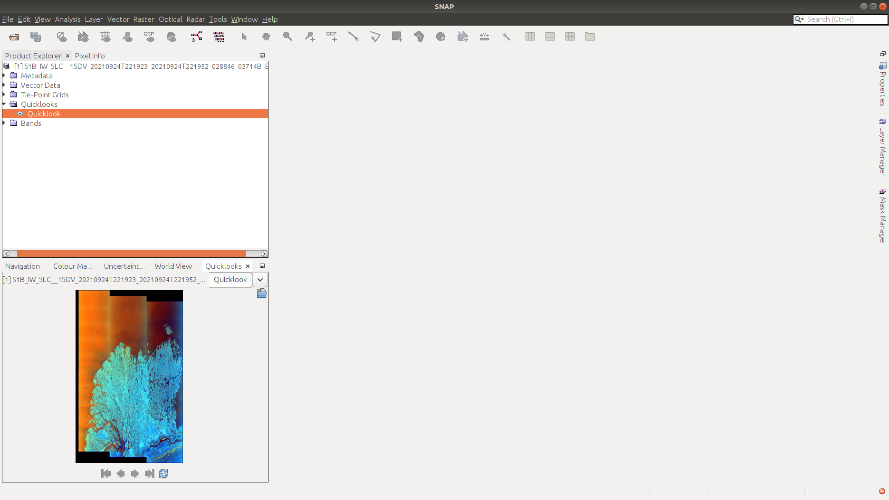
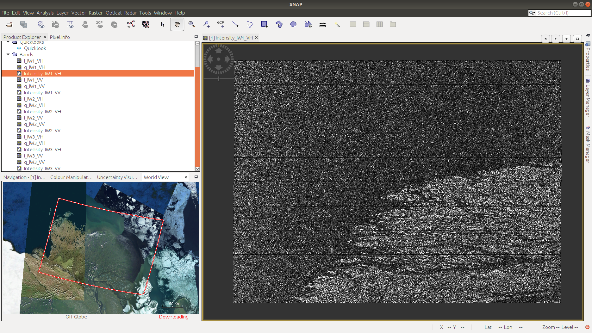
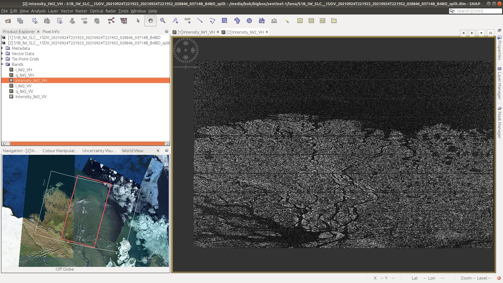
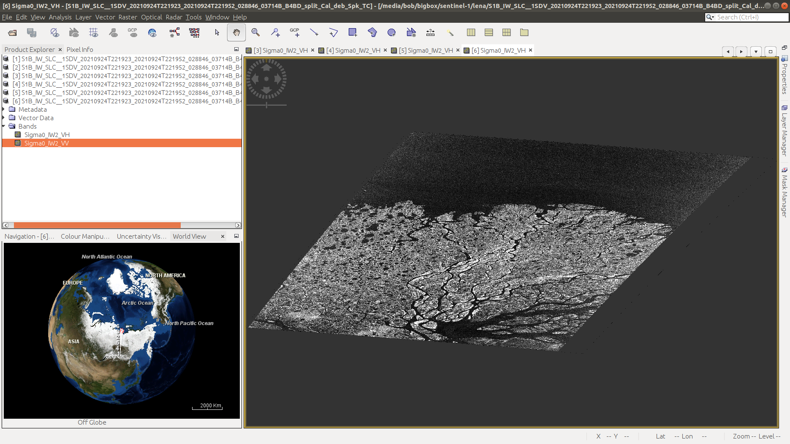
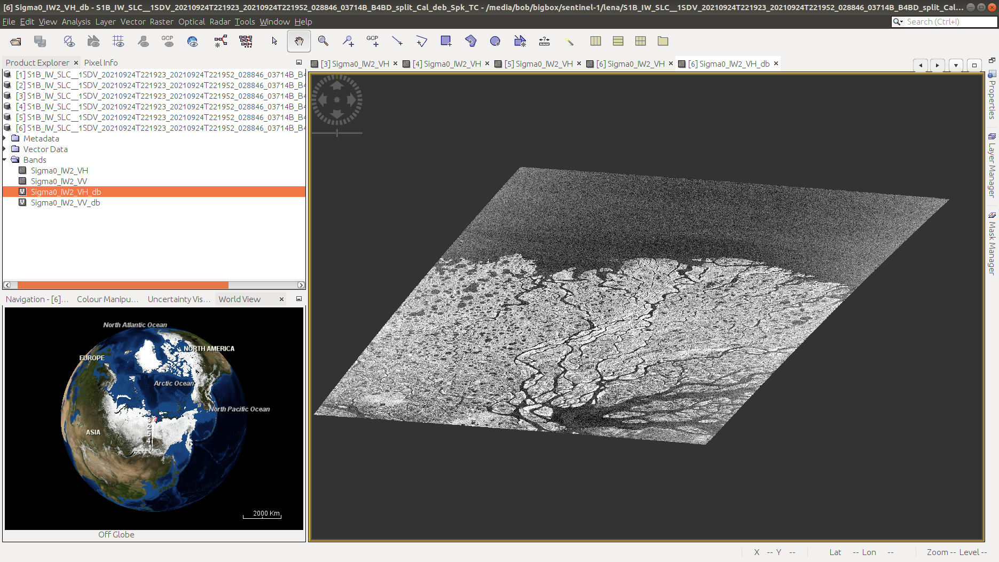

SAR image processing#
For this week’s practical, we’ll learn the steps of processing a SAR image from a focused, Level-1 SLC (single-look complex) image, through to a calibrated, terrain-corrected image. In particular, by the end of this practical, you will be able to use SNAP to:
Calibrate the image to more easily compare to images acquired with different incidence angles or brightness levels
Apply speckle filtering to reduce the speckle in an image
Apply geometric terrain correction to correct for SAR image distortion
Convert the \(\sigma^0\) values to decibels (dB)
The image we’ll be using is a Sentinel-1B interferometric wide swath (IW) scene, acquired 24 September 2021 showing the Lena River Delta, Russia (seen here in a 27 July 2000 Landsat-7 ETM+ image):

Before opening SNAP, download the zipped image file from Blackboard, then unzip the image file. Because of the
image size, this might take some time. Alternatively, you can go to
Copernicus Broswer or
Alaska Satellite Facility (ASF) Data Search to search for and download your
own image.
The granule being used in this example is a scene acquired on 24 September 2021:
S1B_IW_SLC__1SDV_20210924T221923_20210924T221952_028846_03714B_B4BD
but you are welcome to download and use an image of your choosing. If you do so, make sure to choose an interferometric wide swath (IW) scene, and download the Level 1 single-look complex (SLC) format.
Note
For this practical, we’re not actually going to make use of the phase information. In the future, if you are interested in applications of SAR data that don’t require phase information, you can instead download the GRD (ground range detected) product, which has been multi-looked and reprojected to ground range (instead of slant range).
Because we’ll need to work with SLC images for interferometry, I thought it would be best to use the SLC images here, which require some additional processing steps.
getting started#
Note
The following instructions were written using SNAP 8.0.7, which is what the example images show. If you have a different version of SNAP, there may be some slight differences.
Warning
If you have downloaded the data from Blackboard, skip the splitting the data section below - the data uploaded to Blackboard have already been split, to cut down the file size (from 4.4GB to 1.6GB).
To get started, you should first open SNAP - the window should look something like this:

To open the dataset, use the folder icon in the upper left-hand corner, or the drop-down menu
(File > Open Product).
Note
If you downloaded your own file:
Navigate to the zipped folder, select it, and click OK.
Note
If you downloaded the file from Blackboard:
Navigate to the folder where you have extracted the data, then select
S1B_IW_SLC__1SDV_20210924T221923_20210924T221952_028846_03714B_B4BD_split.dim. Click OK.
You should see the image loaded in the panel on the upper left. On the bottom left, you might also see a globe with an outline showing the location of the scene. If you don’t, you can select the World View tab. Other tabs in this panel include:
Navigation, for navigating the image once we’ve loaded it;
Colour Manipulation for changing how the image is displayed in the main window;
Uncertainty Visualisation, for showing the uncertainty information associated with a given band or image.
We can also open a Quicklook image by clicking the arrow next to our scene name, followed by the arrow next to the Quicklooks folder, then double-clicking on Quicklook:
{kind=link}
To visualize one of our bands, we can open the Bands folder, then selecting the band we want to see. Remember
that the
Interferometric Wide Swath
mode captures three sub-swaths using a technique that helps reduce some of the issues related to previous designs.
The SLC data (single-look complex) data thus have 18 total bands to choose from: real, imaginary, and intensity images for two different polarimetry modes (VV and VH) for each sub-swath (3 bands * 2 modes * 3 sub-swaths = 18).
The GRD (ground-range detected) images have had the different bursts and sub-swaths merged, so that there are only 4 bands (amplitude and intensity for each of VV and VH images).
To start with, we’ll look at the VH Intensity image for sub-swath 1 (Intensity_IW1_VH). To load the image, double-click it. It will take a minute to load, but you should eventually see something like this:
{kind=link}
There are a number of things that we can see here. First is that the image is not geocoded - the pixels
correspond to the range and azimuth direction of the sensor, rather than ground coordinates. The next thing we can see
is that there’s quite a bit of speckle in the image - it appears noisy, or with a salt-and-pepper pattern:
{kind=link}
As we work our way through the workflow here, we’ll take care of each of these different issues in turn. Have a
look at the i and q bands, as well. These are the real (i) and complex (q) components of the measured
signal. We will work with these a bit more next week - for now, you can go ahead and close them.
{kind=link}

splitting the data#
We’ll start by splitting the data, to only work with a single sub-swath. Under Radar, select Sentinel-1 TOPS > S1 TOPS Split:

Under I/O Parameters, save the file to
S1B_IW_SLC__1SDV_20210924T221923_20210924T221952_028846_03714B_B4BD_IW2_split (this is most likely already
filled in), then click Processing Parameters:
{kind=link}
Select IW2 as the Subswath, and select both the VH and VV polarizations. Click Run.
You should see two products in the Product Explorer panel: the original image, and the split IW2 image. Open the Intensity_IW2_VH band for the split image - it should look something like this:
{kind=link}
calibrating the data#
Next, we’ll calibrate the data, so that we can eventually compare the image to other scenes. Under Radar, select Radiometric > Calibrate:

Be sure that the split image is selected - if it is, you can leave the Target Name/Directory as-is. Under
Processing Parameters, make sure to select both polarisations, then click Run:

You should see that there are now only two bands in the calibrated image - Sigma0_IW2_VH and Sigma0_IW2_VV.
These are the calibrated, normalized radar cross-section values - in effect, the amount of energy reflected back to the
sensor by the ground. Without this step, comparing images acquired at different times or incidence angles becomes more
difficult - it’s similar to comparing optical images that haven’t been atmospherically corrected.
debursting the data#
Next, we need to combine the bursts, to get rid of the demarcation lines that we can see in the image:

Under Radar, you can again select Sentinel-1 TOPS > S-1 TOPS Deburst. Be sure that the split image is
selected - if it is, you can leave the Target Name/Directory as-is. Under Processing Parameters, make sure to
select both polarisations, then click Run:

When the process has finished running, you should be able to see that the shape has changed somewhat, because the
overlapping areas have been merged. The demarcation lines are also gone, and we have a single image:
{kind=link}
speckle reduction#
Now that we’ve combined each of the bursts, we can move on to speckle filtering and geometric correction. Speckle filtering is an optional step - we don’t necessarily have to do it (and for some applications we don’t want to do it), but for visualizing and interpreting an image, it can help to reduce the noise.
Under Radar, select Speckle Filtering > Single Product Speckle Filter. We’ll use Lee Sigma in this
example, but there are a number of different algorithms available -
this document provides a good overview with
references for some of the different algorithms implemented.
Under Processing Parameters, make sure to select both source bands - for now, leave the other parameters as-is, but feel free to experiment with different combinations after you’ve made it through the remaining steps.

Once the tool finishes running, open the Sigma0_IW2_VH band:
{kind=link}
Notice the difference in the apparent noise level, compared to the original image. At the zoomed-out level, we can
see quite a bit more detail in the filtered image. If we zoom in, we should see that this is true on smaller scales, as
well. Note that this process isn’t perfect - there’s still some texture in the image, since the speckle filtering hasn’t
completely removed the speckle effects.
geocoding#
Next, we need to geocode (terrain-correct) the image, in order to be able to use it in a GIS software or compare to other satellite images.
Under Radar, select Geometric > Terrain Correction > Range-Doppler Terrain Correction. Under Processing Parameters, be sure to select both source bands:

We also need to be sure to select a DEM that will actually cover our study area. The default choice, the
SRTM DEM,
only covers the area between 60ºN and 54ºS, while our study area is at ~72ºN. We’ll use the
Copernicus 30m Global DEM,
which should provide good coverage globally.
Note
If you don’t see the Copernicus 30m Global DEM as an option, try closing and re-starting SNAP.
Make sure to also turn off the Mask out areas without elevation option, as we still want to be able to see parts of
the image that are at sea level, even though they’re masked out in the DEM.
When the process has finished (this will probably take some time!), open the terrain-corrected VH \(\sigma^0\) - it should look quite a bit different than what we’ve seen previously:
{kind=link}
Question
Why do you think the shape of the image has changed so dramatically? If you’re not sure, be sure to post in the Discussion on Blackboard!
convert to dB#
Finally, we’ll convert the values from linear to log (decibel) values - this will help to increase the contrast in darker regions, helping interpretation. Right-click on the first image band, then select Linear to/from dB. This will create a virtual image with the values scaled using the expression \(10\log_{10}({\rm \sigma_{\rm VH}})\):
{kind=link}
Once you’ve done this for the Sigma_VV band, we’ll need to convert the virtual bands to real bands by
right-clicking on the virtual band and selecting Convert Band. Now, we can export the image to a different file
format (for example, GeoTIFF). To do this, select File > Export > GeoTIFF (or another format of your choice).
This will bring up the export dialogue:

Click on Subset, then Band Subset:

Here, I’m choosing to export the dB images separately - first the VH band and then the VV band - in part because
of how large the images are (~2 GB per band!).
Note
If storage space is a concern, you can also select a spatial subset.
At this point, we’re done with SNAP. There are a number of other tools/features in the software, including for processing other SAR datasets such as ERS, ENVISAT, or ALOS-PALSAR. The software also supports processing and analysis of other Sentinel datasets, including Sentinel-2 and Sentinel-3. Next week, we’ll see how we can use the SNAP for interferometric SAR (InSAR) applications.
questions#
Now that you’ve processed and exported both images, you can load them into a GIS software of your choice. I would recommend adding a basemap (for example, the ESRI Basemap) or an optical image (e.g., Sentinel-2, Landsat), to help with some of the interpretation. Think about the following questions - if you need help or want to discuss, be sure to post it on Blackboard:
What are the different dark areas scattered throughout the scene? can you explain what’s going on here? What is it about these different surfaces that causes them to appear bright or dark?
Along the riverbanks, there are a number of significantly bright patches - can you think of a mechanism that we’ve discussed that would cause these areas to be brighter than other areas?
What differences do you notice between the VH and VV polarization? Can you explain why, for example, you might expect more scattering in VV polarization than in VH polarization for water?
What kind of ocean conditions do you were present on 24 September 2021? Why do you think this?